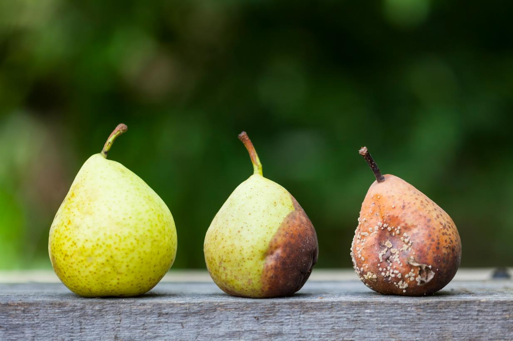
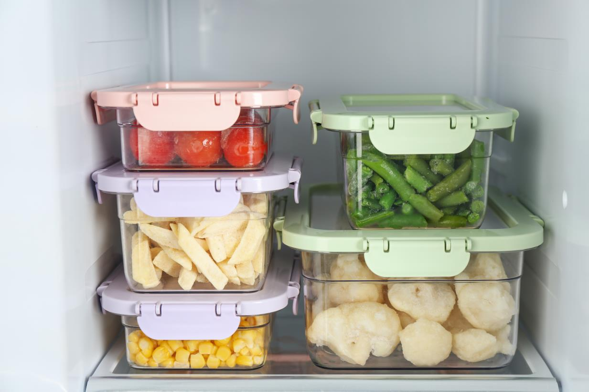
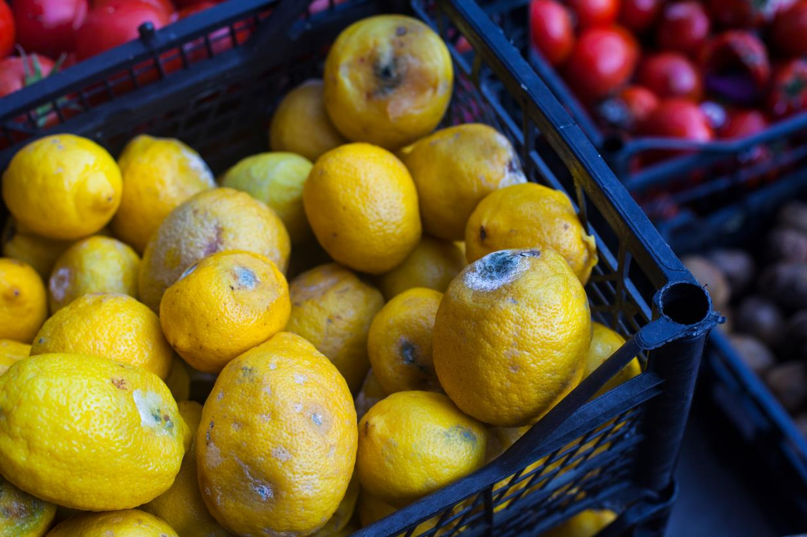

Get Involved
Find out how you can contribute to the fight against food waste.

Worldwide, tonnes of edible food are lost or wasted every day. Between harvest and retail
alone, around 14 percent of all food produced globally is lost. Huge quantities of food are also
wasted in retail or at the consumer level.
quick tips for reducing food waste and
becoming a Food hero
We all have a part to play in saving food
For many people in the world, food waste has become a habit: buying more food than we need at markets, letting fruits and vegetables spoil at home or taking larger portions than we can eat.
These habits put extra strain on our natural resources and damage our environment. When we waste food, we waste the labour, effort, investment and precious resources (like water, seeds, feed, etc.) that go into producing it, not to mention the resources that go into transporting and processing it. In short, wasting food increases greenhouse gas emissions and contributes to climate change.
It’s a big problem. In fact, worldwide, tonnes of edible food are lost or wasted every day. Between harvest and retail alone, around 14 percent of all food produced globally is lost. Huge quantities of food are also wasted in retail or at the consumer level.
The part of food that is lost from harvest up to, but not including, the retail level is called food loss. The part wasted at the consumer or retail level is referred to as food waste. We make this distinction to address the root causes of this problem, a problem that everyone from farmers and producers to customers and shop-owners can help end.
Reducing food loss and waste is essential in a world where millions of people go hungry every day . When we reduce waste, we respect that food is not a given for the millions of people who go hungry every day.
It’s up to us to change our habits to make not wasting food a way of life!
Here are some easy actions you can take to re-connect to food and what it stands for:
1. Adopt a healthier, more sustainable diet
Life is fast-paced and preparing nutritious meals can be a challenge, but healthy meals don't have to be elaborate. The internet is full of quick healthy recipes that you can share with your family and friends
2. Buy only what you need
Plan your meals. Make a shopping list and stick to it, and avoid impulse buys. Not only will you waste less food, you’ll also save money!
3. Pick ugly fruit and vegetables
Don’t judge food by its appearance! Oddly-shaped or bruised fruits and vegetables are often thrown away because they don’t meet arbitrary cosmetic standards. Don’t worry - they taste the same! Use mature fruit for smoothies, juices and desserts.
4. Store food wisely
Move older products to the front of your cupboard or fridge and new ones to the back. Use airtight containers to keep open food fresh in the fridge and ensure packets are closed to stop insects from getting in.
5. Understand food labelling
There’s a big difference between “best before” and “use-by” dates. Sometimes food is still safe to eat after the “best before” date, whereas it’s the “use-by” date that tells you when it is no longer safe to eat. Check food labels for unhealthy ingredients such as trans fats and preservatives and avoid foods with added sugar or salt.
6. Start small
Take smaller portions at home or share large dishes at restaurants.
7. Love your leftovers
If you don’t eat everything you make, freeze it for later or use the leftovers as an ingredient in another meal.

Buying ugly fruits and vegetables or using leftovers for other meals are two good habits to avoid
food loss and waste. Left/Top: © Smiallaan/shutterstock.com Right/Bottom: ©New Africa /shutterstock.com
8. Put your food waste to use
Instead of throwing away your food scraps, compost them. This way you are giving nutrients back to the soil and reducing your carbon footprint.
9. Respect food
Food connects us all. Re-connect with food by knowing the process that goes into making it. Read about food production and get to know your farmers.
10. Support local food producers
By buying local produce, you support family farmers and small businesses in your community. You also help fight pollution by reducing delivery distances for trucks and other vehicles.
11. Keep fish populations afloat
Eat fish species that are more abundant, such as mackerel or herring, rather than those that are at risk of being overfished, like cod or tuna. Buy fish that has been caught or farmed sustainably, such as eco-labelled or certified fish.
12. Use less water
We can’t produce food without water! While it’s important that farmers use less water to grow food, reducing food waste also saves all the water resources that went into producing it. Reduce your water intake in other ways too: fixing leaks or turning off the water while brushing your teeth!
13. Keep our soils and water clean
Some household waste is potentially hazardous and should never be thrown in a regular rubbish bin. Items such as batteries, paints, mobile phones, medicine, chemicals, fertilizers, tires, ink cartridges, etc. can seep into our soils and water supply, damaging the natural resources that produce our food.
14. Eat more pulses and veggies
Once a week, try eating a meal based on pulses or ‘ancient’ grains like quinoa.
15. Sharing is caring
Donate food that would otherwise be wasted. For example, Apps can connect neighbours with each other and with local businesses so surplus food can be shared, not thrown away.

29 September marks the day to raise awareness about food loss and waste. Even small changes in
habits can make a big impact. ©Poket Idol/shutterstock.com
On 29 September 2020, we celebrate the first observance of the International Day of Awareness of Food Loss and Waste. It also comes during the global COVID-19 pandemic, that has brought about a wake-up call on the need to transform and rebalance the way our food is produced and consumed. Wasting less, eating better and adopting a sustainable lifestyle are key to building a world free of hunger.
Little changes to our daily habits can make a huge global impact. Take action. Stop food loss and waste. For the people and for the planet.
Learn more